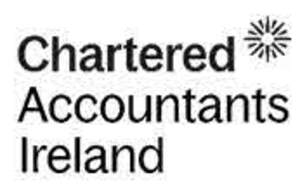

Trade Mark Journal No.2025/045 7 November 2025
UK00004249860 15 August 2025 (9,16,35,36,41,45)

- Class 9
- Videos; educational and instructional tapes, videos, sound recordings, CD ROMs; educational computer software packages relating to accountancy services, financial services, accounts, auditing, insolvency and taxation, provision of financial information, financial reporting and consultancy services relating to accountancy, corporate advisory services, recruitment of accountancy personnel.
- Class 16
- Periodical publications; newsletters; magazines; year books; printed matter; calendars; stationery; books; brochures; forms; handbooks; manuals; periodicals; prospectuses; teaching materials; catalogues, relating to accountancy services, preparation of accounts and advisory services relating to accounts, auditing, insolvency and taxation, provision of financial information, financial reporting consultancy services relating to accountancy, corporate advisory services and recruitment of accountancy personnel.
- Class 35
- Accountancy services; preparation of accounts and business advisory services relating to accounts, auditing, insolvency and taxation; corporate advisory services relating to accounts, accountancy, auditing, insolvency and taxation; recruitment of accountancy personnel.
- Class 36
- Provision of and advising on financial information; preparation of and advising on financial reports and analysis; administration of financial affairs; financial appraisals; valuations; financial services all relating to accountancy and investment advice including underwriting and placing of securities; provision of financial information; financial reporting consultancy services relating to accountancy.
- Class 41
- Teaching, tuition and training services; lecturing services; education examination services; education information services; educational consultation services; instruction services; organisation of exhibitions for educational purposes; correspondence courses; arranging and conducting of colloquiums, conferences, congresses, seminars and symposiums; publication of books and texts; rental of educational apparatus and instruments; practical training services; organisation and arranging of seminars, training sessions and workshops.
- Class 45
- Arbitration services; litigation services.
Chartered Accountants Ireland
Representative: Tomkins & Co